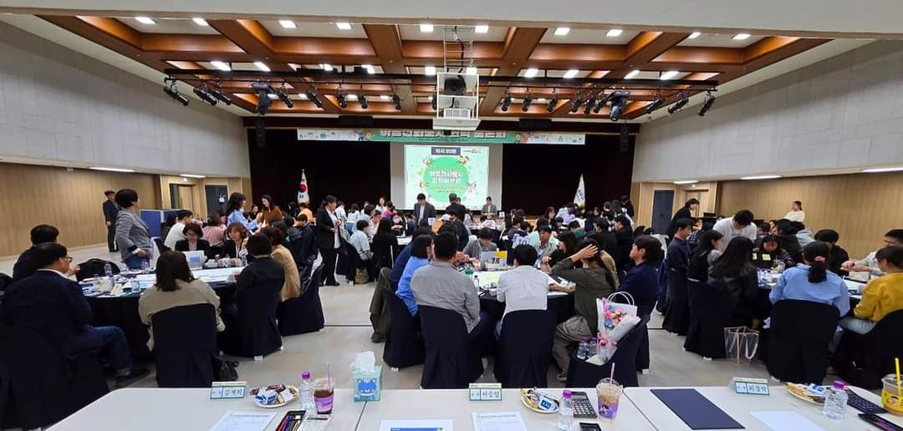

프로그램 활동 모습
퍼실리테이터 양성 과정
실습 중심의 전문가 양성 프로그램
워크숍 진행
참여형 워크숍 설계 및 진행

보수교육 현장
현장 전문가들의 심화 교육

숙의공론 진행
시민참여형 토론 진행
전문적인 퍼실리테이터 양성과 숙의공론 진행을
통해 조직과 사회의 소통과 혁신을 이끌어갑니다
전문적인 퍼실리테이터로 성장하기 위한
체계적인 교육 프로그램을 제공합니다.
현장에서 활동 중인 퍼실리테이터를 위한
심화 교육과 최신 트렌드를 제공합니다.
사회적 이슈에 대한 시민 참여형 숙의공론 프로세스를 설계하고 진행합니다.
실습 중심의 전문가 양성 프로그램
참여형 워크숍 설계 및 진행
현장 전문가들의 심화 교육
시민참여형 토론 진행